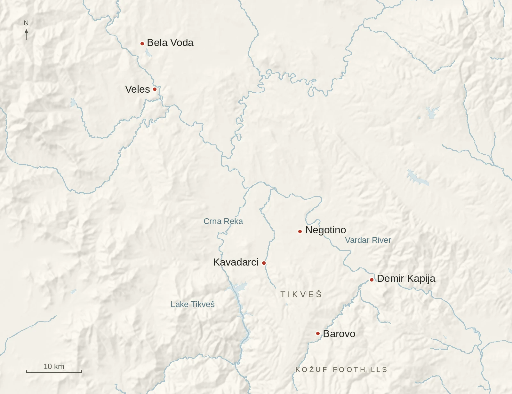
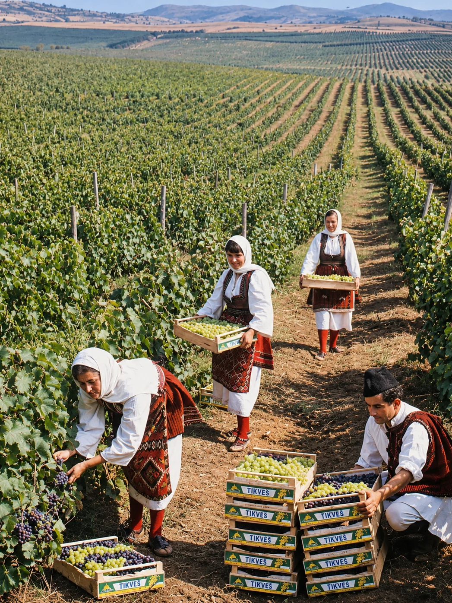

Start with Macedonian Wine for the regions, grapes, and first bottles.
Vranec is a Balkan red grape with dark skins, often recognizable in the glass by its deep color, black-cherry fruit and firm tannins. In Montenegro, where growers have cultivated it for centuries, it goes by Vranac. In Macedonia today it’s a signature red, though its rise here is relatively recent.
Writing for the Wine & Spirit Education Trust, Zvonko Herceg traces its Macedonian plantings to a postwar trial near Skopje. The grape could yield enough to supply a large Yugoslav market. It spread from there, and today you’ll find it in everything from straightforward varietal wines to cellar-aged blends named for a vineyard.
For a first look at where it grows, follow the Vardar southeast from Skopje. The valley is the larger wine region. Tikveš is the district around Kavadarci and Negotino, and the name of a winery in Kavadarci. That distinction helps when you turn over a bottle and find both the producer and the place of origin on the label.
Tikveš and the Vardar Valley

- Kavadarci and Negotino
- Two towns at the heart of the Tikveš district. Kavadarci is home to Tikveš Winery.
- The Vardar and Crna Reka
- The Vardar is the main river. Crna Reka feeds Lake Tikveš and joins the Vardar upstream of Negotino.
- Demir Kapija and Barovo
- The Vardar cuts through a gorge at Demir Kapija. Southwest of town, Tikveš’s Barovo vineyards sit at 500–590 meters in the Kožuf foothills.
- Veles and Bela Voda
- Follow the Vardar northwest to Veles. Tikveš lists its Bela Voda site farther north at 280–300 meters, lower than Barovo.

Growing along the Vardar
On the map, the river winds past Negotino and narrows at Demir Kapija. The valley brings inland and Mediterranean conditions together. Hot days let grapes accumulate sugar. In cooler sites, especially where nights cool down, the fruit can hold onto more of its acidity as it ripens. Wind, the direction a slope faces and when the grower picks all affect what arrives at the cellar.
Follow the ground uphill from the river toward Barovo. Tikveš lists its vineyards there at 500–590 meters and describes volcanic soils and a wide swing between daytime and nighttime temperatures. Bela Voda is a lower site at 280–300 meters, with clay in the parcels used for the red. Each site has its own growing conditions, even though the same winery makes both wines.
What to taste in a first glass
Start with a dry Vranec. Bovin’s Vranec is one example, and Popova Kula near Demir Kapija lists a dry, 100 percent Vranec bottling. Smell for black cherry, blackberry or plum. Then take a sip and wait. Acidity makes the mouth water. Tannin leaves a grip along the gums and inside the cheeks, much like strong black tea. Both can be present in the same sip.
Pour T’ga za jug alongside it. The name comes from Konstantin Miladinov’s poem “Longing for the South.” A poem about longing for home became the name of an everyday Macedonian wine. Tikveš makes it semi-dry, with some sugar left in the finished wine. Ripe fruit can smell sweet even in a dry red. Tasting the two together makes it easier to distinguish the aroma of ripe fruit from the sweetness you feel on the palate.
Read the vineyard name, then the blend
Barovo and Bela Voda put vineyard names on the front of the bottle. Look for the grapes on the back. Barovo Red leads with Kratošija, the grape also known as Zinfandel or Primitivo. A genetic study of old Montenegrin vineyards identified it as one of Vranec’s parents. Bela Voda Red leads with Vranec and blends it with Plavec.
| Detail | Barovo Red | Bela Voda Red |
|---|---|---|
| Vineyard elevation | 500–590 m | 280–300 m |
| Blend | 65% Kratošija 35% Vranec | 70% Vranec 30% Plavec |
| Time on skins | 21 days | 21 days |
| New French oak | 18 months | 15 months |
Both reds fermented in concrete and spent three weeks in contact with their skins, a stage that draws out color and tannin. New oak can add aromas such as vanilla or toast. The two wines give you a way to compare how fruit, tannin and oak come together when the site and the blend both change.
Try it at the table
Pour two small glasses at the same temperature. Taste each on its own, then with a bite of grilled lamb or a piece of bread and roasted pepper. Which wine makes your mouth water more? Which leaves a grip after the food? See whether you reach for the same glass with both dishes. That’s a good way to work out what you like in a Vranec before you buy the next bottle.